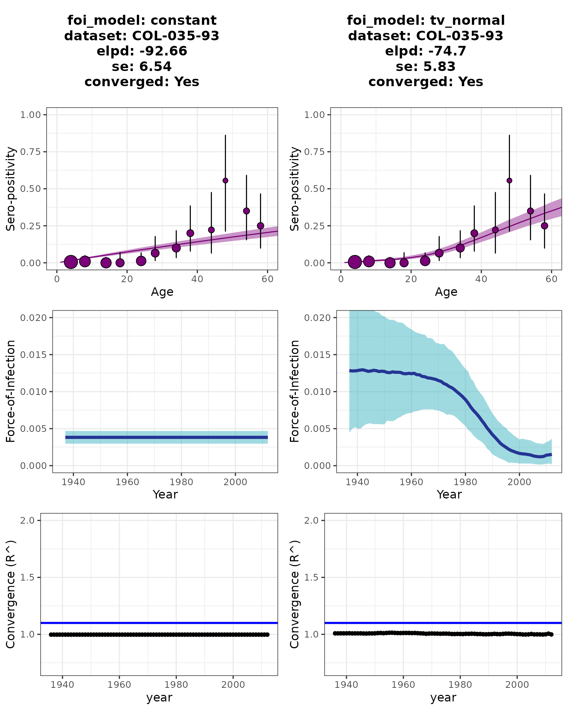
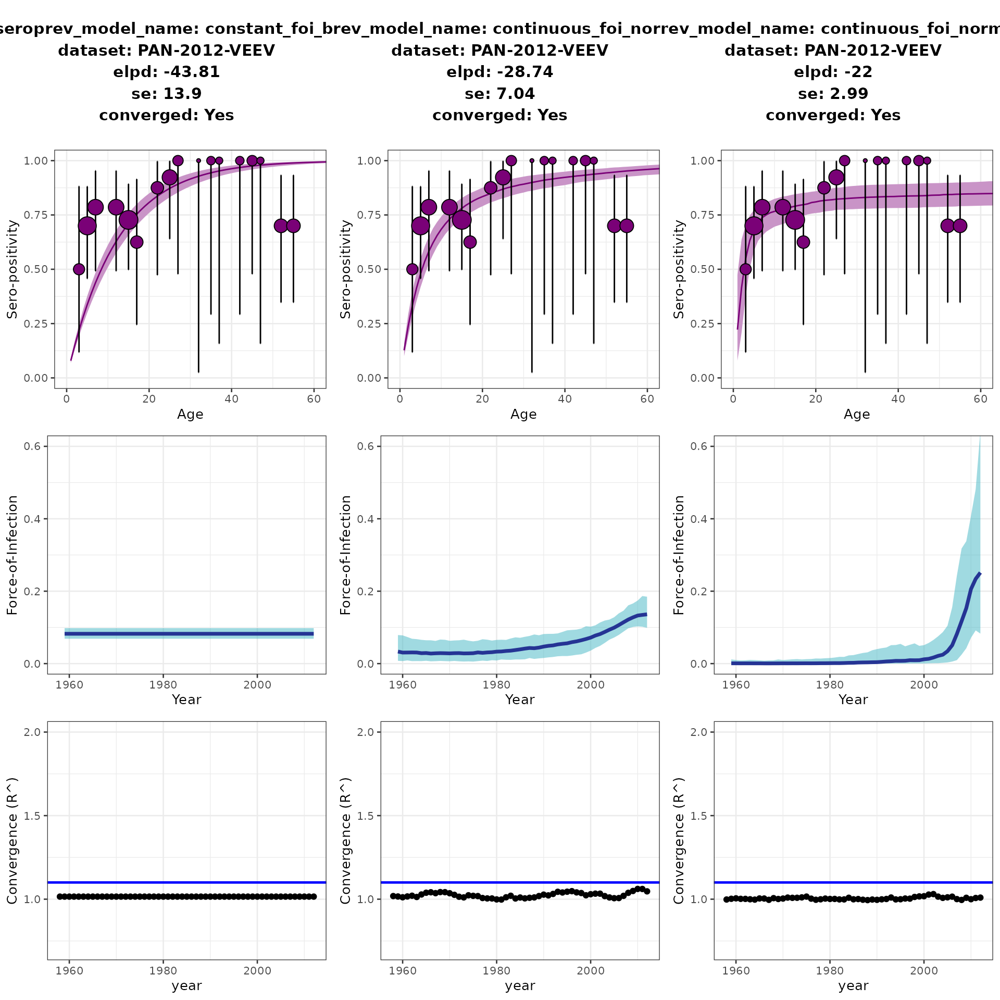

Use cases
use_cases.RmdEpidemiological scenarios for the serofoi models
serofoi is an R package that allows estimations of the Force-of-Infection from a population based serosurvey data.
Sero-survey data
Surveys had to meet all of the following inclusion criteria:
Be population-based (not hospital based)
Specify individuals’ age or age group
Indicate diagnostic test(s) used. The current version of serofoi only applies to IgG antibodies)
Identify the location and date (year) of sample collection
Model assumptions
Current version of serofoi includes the following assumptions on the underlying biological process:
The Force-of-infection (FoI) is estimated using a catalytic model
There is no sero-reversion (from positive to negative). It means IgG antibodies are life-long duration with no waning immunity. This may not be the case for several pathogens. This feature is planned for future versions of serofoi.
There is no age-dependency. This may not be the case for several pathogens. This feature is planned for future versions of serofoi.
There is no impact from migration processes in the sampled population
There are no differences in the mortality rate of infected versus susceptible individuals
NOTE: Running the serofoi models for the first time on your local computer make take a few minutes while the rstan code is compiled locally. Afterwards, no further local compilation is needed.
Constant vs Time-varying FoI models
Constant Force-of-Infection (endemic model)
For constant endemic model, the rate of infection acquisition―rate of seroconversion―is constant over time, and infection (sero)prevalence will increase monotonically with age as cumulative exposure increases.
Denoting \(n(a,t)\) the number of seropositive individuals of age \(a\) at time \(t\) , \(N\) the serosurvey sample size, and \(P(a,t)\) the underlying seroprevalence at age \(a\) at time \(t\), we assumed that the number of seropositive subjects follows a Binomial distribution \(n(a,t)\) ~ \(B(N,P(a,t))\).
For the force-of-infection (FoI) that is constant over time, denoted \(\lambda\), we modelled seroprevalence for age \(a\) in year \(t\) (i.e. the time when the serosurvey occurred) as:
\[ P(a,t) = 1−exp(−\lambda{a})\]
The corresponding code for the constant-FoI model with binomial distribution is:
Time-varying Force-of-Infection
For the time-varying FoI model, the FoI values are estimated from a binomial distribution. The sero-prevalence as age a can be expressed as:
\[ 𝑃(𝑎,𝑡)=1−exp(−∑_{i=t-a+1}^{t}𝜆{i}) \]
Therefore, a serosurvey completed at time \(t\) and including ages \(a\) from {\(age_{min}, age_{max}\)} is informative on exposure (and FoI) between {\(t, age_{max}\)} and \(t\).
Currently, two models within serofoi allow time-varying FoI, with corresponding code:
Fitting process
Models are implemented in RStan using the No-U-Turn sampler, a type of Hamiltonian Monte Carlo sampling. After convergence, the best-fitting models can be selected based on the expected log predictive density for an out-of-sample data point (elpd).
Case study 1. Chagas disease (endemic disease)
Based on the data and analysis shown in (Cucunubá et al.
2017), we use one of the datasets for measuring the
sero-prevalence of IgG antibodies against Trypanosoma cruzi
infection in rural area of Colombia in 2012. The dataset is part of the
serofoi package as chagas2012.
data("chagas2012")
head(chagas2012, 5)
#> survey total counts age_min age_max year_init year_end tsur country test
#> 1 COL-035-93 34 0 1 1 2012 2012 2012 COL ELISA
#> 2 COL-035-93 25 0 2 2 2012 2012 2012 COL ELISA
#> 3 COL-035-93 35 1 3 3 2012 2012 2012 COL ELISA
#> 4 COL-035-93 29 0 4 4 2012 2012 2012 COL ELISA
#> 5 COL-035-93 36 0 5 5 2012 2012 2012 COL ELISA
#> antibody
#> 1 IgG anti-T.cruzi
#> 2 IgG anti-T.cruzi
#> 3 IgG anti-T.cruzi
#> 4 IgG anti-T.cruzi
#> 5 IgG anti-T.cruziAfter preparing the data we can run two models (constant and time varying) available on serofoi.
chagas2012p <- prepare_serodata(chagas2012)
m1_cha <- run_seromodel(serodata = chagas2012p,
seromodel_name = "constant_foi_bi",
n_iters = 500,
n_thin = 2)
#> [1] "serofoi model constant_foi_bi finished running ------"
#> [,1]
#> seromodel_name "constant_foi_bi"
#> dataset "COL-035-93"
#> country "COL"
#> year "2012"
#> test "ELISA"
#> antibody "IgG anti-T.cruzi"
#> n_sample "747"
#> n_agec "72"
#> n_iter "500"
#> elpd "-92.66"
#> se "6.54"
#> converged "Yes"
m2_cha <- run_seromodel(serodata = chagas2012p,
seromodel_name = "continuous_foi_normal_bi",
n_iters = 1500,
n_thin = 2)
#> [1] "serofoi model continuous_foi_normal_bi finished running ------"
#> [,1]
#> seromodel_name "continuous_foi_normal_bi"
#> dataset "COL-035-93"
#> country "COL"
#> year "2012"
#> test "ELISA"
#> antibody "IgG anti-T.cruzi"
#> n_sample "747"
#> n_agec "72"
#> n_iter "1500"
#> elpd "-74.7"
#> se "5.83"
#> converged "Yes"Now, we can plot the results of the two models to compare (Figure 1). As shown in Cucunubá et al. (2017), interventions for Chagas control have been ongoing from the 1980s in Colombia having heterogeneous impact depending on the type of population. For this serosurvey, which is from tradittional indigenous rural area, the serofoi models are able to detect a modest still relevant slow decreasing trend consistent (model 2) as slightly better supported than the constant model. Notice that model 3 does not converge despite a high number of iterations.
p1_cha <- plot_seromodel(m1_cha, size_text = 12, max_lambda = 0.02)
p2_cha <- plot_seromodel(m2_cha, size_text = 12, max_lambda = 0.02)
cowplot::plot_grid(p1_cha, p2_cha, nrow = 1, ncol = 2)
Case study 2. Hidden Alphaviruses epidemics in Panama
As shown in (Carrera et al. 2020), hidden epidemic
and endemic transmission of alphaviruses in Eastern Panama have been
around for decades. From this paper we use a dataset measuring IgG
antibodies againts Venezuelan Equine Encephalitis Virus (VEEV) in a
rural village in Panamá in 2017. This dataset, veev2017 is
included in serofoi.
data("veev2012")
head(veev2012, 5)
#> survey total counts age_min age_max year_init year_end tsur country
#> 1 PAN-2012-VEEV 6 3 1 5 2012 2012 2012 PAN
#> 2 PAN-2012-VEEV 14 11 5 10 2012 2012 2012 PAN
#> 3 PAN-2012-VEEV 14 11 10 15 2012 2012 2012 PAN
#> 4 PAN-2012-VEEV 8 5 15 20 2012 2012 2012 PAN
#> 5 PAN-2012-VEEV 8 7 20 25 2012 2012 2012 PAN
#> test antibody
#> 1 ELISA IgG anti-VEEV
#> 2 ELISA IgG anti-VEEV
#> 3 ELISA IgG anti-VEEV
#> 4 ELISA IgG anti-VEEV
#> 5 ELISA IgG anti-VEEV
veev2012p <- prepare_serodata(veev2012)
m1_veev <- run_seromodel(serodata = veev2012p,
seromodel_name = "constant_foi_bi",
n_iters = 500,
n_thin = 2)
#> [1] "serofoi model constant_foi_bi finished running ------"
#> [,1]
#> seromodel_name "constant_foi_bi"
#> dataset "PAN-2012-VEEV"
#> country "PAN"
#> year "2012"
#> test "ELISA"
#> antibody "IgG anti-VEEV"
#> n_sample "146"
#> n_agec "17"
#> n_iter "500"
#> elpd "-43.81"
#> se "13.9"
#> converged "Yes"
m2_veev <- run_seromodel(serodata = veev2012p,
seromodel_name = "continuous_foi_normal_bi",
n_iters = 500,
n_thin = 2)
#> [1] "serofoi model continuous_foi_normal_bi finished running ------"
#> [,1]
#> seromodel_name "continuous_foi_normal_bi"
#> dataset "PAN-2012-VEEV"
#> country "PAN"
#> year "2012"
#> test "ELISA"
#> antibody "IgG anti-VEEV"
#> n_sample "146"
#> n_agec "17"
#> n_iter "500"
#> elpd "-28.74"
#> se "7.04"
#> converged "Yes"
m3_veev <- run_seromodel(serodata = veev2012p,
seromodel_name = "continuous_foi_normal_log",
n_iters = 500,
n_thin = 2)
#> [1] "serofoi model continuous_foi_normal_log finished running ------"
#> [,1]
#> seromodel_name "continuous_foi_normal_log"
#> dataset "PAN-2012-VEEV"
#> country "PAN"
#> year "2012"
#> test "ELISA"
#> antibody "IgG anti-VEEV"
#> n_sample "146"
#> n_agec "17"
#> n_iter "500"
#> elpd "-22"
#> se "2.99"
#> converged "Yes"Now, we can plot the results of the three models to compare. On Figure 3, we can observe a large increase in the estimated FOI. As suggested in Carrera et al. (2020), an important increase in the transmission of VEEV in this region is inferred. Although the three fitted models converge well, we see much larger support for a more sudden increase in recent years with highest FoI values at 0.25 (consistent with an epidemic).
p1_veev <- plot_seromodel(m1_veev, size_text = 10, max_lambda = 0.6)
p2_veev <- plot_seromodel(m2_veev, size_text = 10, max_lambda = 0.6)
p3_veev <- plot_seromodel(m3_veev, size_text = 10, max_lambda = 0.6)
cowplot::plot_grid(p1_veev, p2_veev, p3_veev, nrow = 1, ncol = 3)
Figure 3. Results of fitted models, Force-of-Infection estimates and convergence.
Case study 3. A known Large Chikungunya epidemic in Brazil
Chikungunya outbreaks ocurred rapidly after the introduction of the virus to Brazil in 2013-2014. We use the dataset from (Dias et al. 2018) that conducts a population-based study through household interviews and serologic surveys (measuring IgG antibodies against Chikungunya virus) in Bahia, Brazil during October-December 2015, right after a large CHIKV epidemic that occurred in that area.
data("chik2015")
head(chik2015, 5)
#> survey total counts age_min age_max year_init year_end tsur country
#> 1 BRA 2015(S019) 144 63 40 59 2015 2015 2015 BRA
#> 2 BRA 2015(S019) 148 69 60 79 2015 2015 2015 BRA
#> 3 BRA 2015(S019) 45 17 1 19 2015 2015 2015 BRA
#> 4 BRA 2015(S019) 109 55 20 39 2015 2015 2015 BRA
#> test antibody reference
#> 1 ELISA IgG anti-CHIKV Dias et al. 2018
#> 2 ELISA IgG anti-CHIKV Dias et al. 2018
#> 3 ELISA IgG anti-CHIKV Dias et al. 2018
#> 4 ELISA IgG anti-CHIKV Dias et al. 2018
chik2015p <- prepare_serodata(chik2015)
mod1_chik <- run_seromodel(serodata = chik2015p,
seromodel_name = "constant_foi_bi",
n_iters = 1000,
n_thin = 2)
#> [1] "serofoi model constant_foi_bi finished running ------"
#> [,1]
#> seromodel_name "constant_foi_bi"
#> dataset "BRA 2015(S019)"
#> country "BRA"
#> year "2015"
#> test "ELISA"
#> antibody "IgG anti-CHIKV"
#> n_sample "446"
#> n_agec "4"
#> n_iter "1000"
#> elpd "-39.57"
#> se "8.48"
#> converged "Yes"
mod2_chik <- run_seromodel(serodata = chik2015p,
seromodel_name = "continuous_foi_normal_bi",
n_iters = 1500,
n_thin = 2)
#> [1] "serofoi model continuous_foi_normal_bi finished running ------"
#> [,1]
#> seromodel_name "continuous_foi_normal_bi"
#> dataset "BRA 2015(S019)"
#> country "BRA"
#> year "2015"
#> test "ELISA"
#> antibody "IgG anti-CHIKV"
#> n_sample "446"
#> n_agec "4"
#> n_iter "1500"
#> elpd "-20.76"
#> se "1.98"
#> converged "Yes"
mod3_chik <- run_seromodel(serodata = chik2015p,
seromodel_name = "continuous_foi_normal_log",
n_iters = 1500,
n_thin = 2)
#> [1] "serofoi model continuous_foi_normal_log finished running ------"
#> [,1]
#> seromodel_name "continuous_foi_normal_log"
#> dataset "BRA 2015(S019)"
#> country "BRA"
#> year "2015"
#> test "ELISA"
#> antibody "IgG anti-CHIKV"
#> n_sample "446"
#> n_agec "4"
#> n_iter "1500"
#> elpd "-12.58"
#> se "0.81"
#> converged "Yes"In Figure 4, we can observe the comparison between the three serofoi models. Here serofoi shows strong statistical support for a sudden increase in the transmission of CHIKV close to the year of the serosurvey (2015). The exact year is not possible to estimate, mainly given the data used is largely aggregated by 20-years age groups. Despite that, the results are consistent with the empirical evidence shown by (Dias et al. 2018) with both interviews, and IgM testing.
p1_chik <- plot_seromodel(mod1_chik, size_text = 10, max_lambda = 0.08)
p2_chik <- plot_seromodel(mod2_chik, size_text = 10, max_lambda = 0.08)
p3_chik <- plot_seromodel(mod3_chik, size_text = 10, max_lambda = 0.08)
cowplot::plot_grid(p1_chik, p2_chik, p3_chik, nrow = 1, ncol = 3)